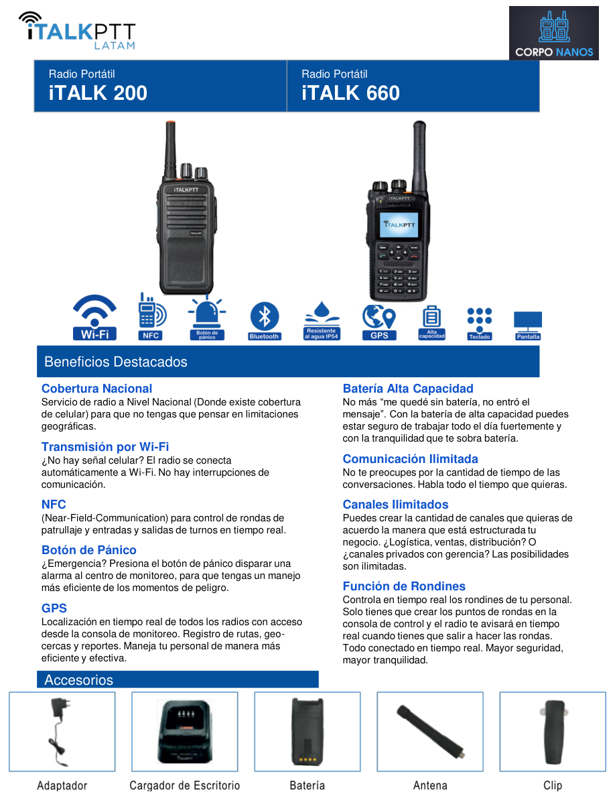
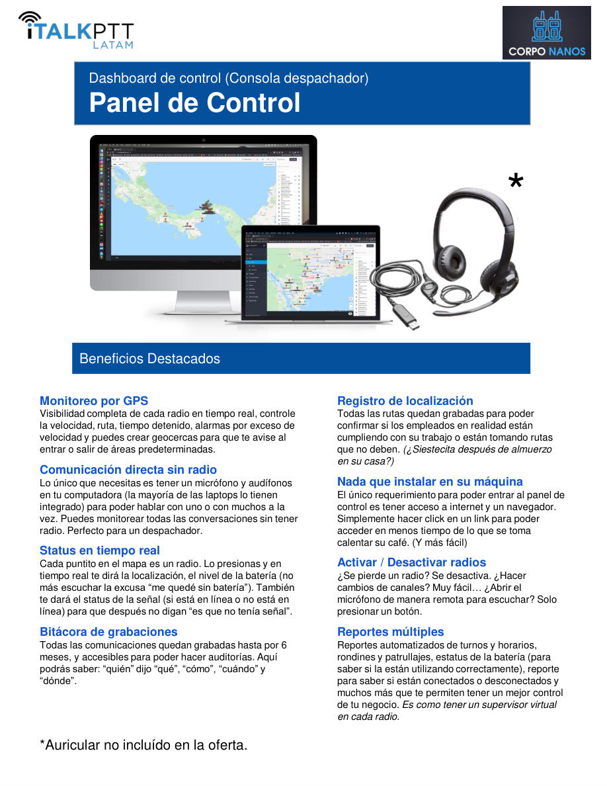

01
Cobertura amplia
Comunicación nacional e internacional en zonas con cobertura celular o Wi‑Fi, sin las limitaciones geográficas de la radio convencional.
CorpoNanos pone a su disposición la tecnología de iTALKPTT LATAM para transformar la comunicación operativa en seguridad, logística, transporte, supervisión y operaciones de campo. Una solución integral con radios inteligentes, localización en tiempo real, rondines, control de turnos y consola en la nube.
iTALKPTT combina comunicación, supervisión, localización y control operativo en un solo ecosistema para operaciones modernas.
Comunicación nacional e internacional en zonas con cobertura celular o Wi‑Fi, sin las limitaciones geográficas de la radio convencional.
Seguimiento minuto a minuto, rutas, tiempos detenidos, alertas y control de zonas predeterminadas.
El sistema permite validar rondas y apoyar procesos de entradas y salidas con NFC y reportes automáticos.
Registro de comunicaciones, reportes de batería, radios en línea y trazabilidad para auditoría y supervisión.
Basado en la propuesta adjunta, CorpoNanos promueve especialmente los modelos iTALK 200 e iTALK 660 para entornos de trabajo de alta demanda.

Radios robustos con batería de alta capacidad, comunicación ilimitada, canales ilimitados, GPS, Wi‑Fi, botón de pánico y soporte para rondines.
La operación no depende únicamente del radio: la verdadera ventaja está en la visibilidad y control que se obtiene desde la plataforma web.

Solo se requiere conexión a internet y un navegador. Esto facilita la supervisión en tiempo real, el despacho y la toma de decisiones desde cualquier lugar.
Además de la información de la propuesta, el sitio de iTALKPTT destaca una evolución hacia seguridad inteligente, supervisión avanzada y herramientas como PatrolSync, ShiftHero, TimeWeb Force, CloudCommand y PredictAI.
La solución busca convertir la comunicación operativa en una ventaja competitiva mediante supervisión, trazabilidad y datos para la toma de decisiones.
Reduce dependencia de celulares personales en tareas críticas y fortalece el control en campo para empresas de seguridad, transporte y operaciones intensivas.
El ecosistema incluye radios profesionales, tecnologías para rondines, gestión de turnos, despacho en la nube e iniciativas de inteligencia predictiva.
Para conocer disponibilidad, modelos recomendados, implementación en Honduras y una propuesta adaptada a su operación, escriba directamente a CorpoNanos.